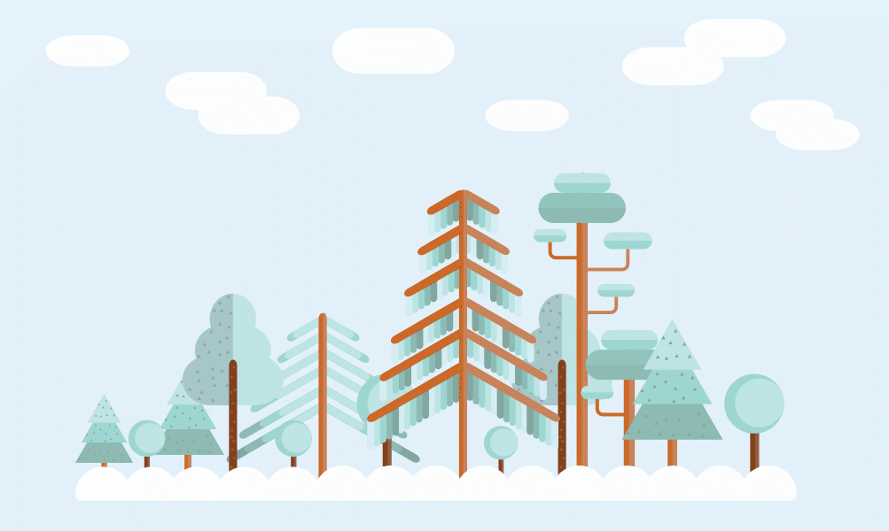
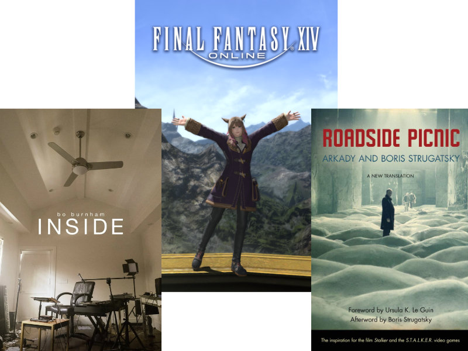

I can't help but feel that I've told this story before.
| left brain | academics | right brain | leisure |
|---|---|---|---|
| I kind of grew up being the "computer person" in my family, and I took several coding classes and did pretty well in it. So when it came time to think of going to college, the choice seemed clear.  |
I used to be (well, still am sometimes) physically reserved and part of the "going home club" after school. For whatever reason, maybe fear of being made fun of, or stereotypes drilled in me, I was also uncomfortable even mentioning a lot of...interests beyond the socially accepted one in my area, computers. Keeping it vague when I had to introduce myself for class was my MO. |
||
| I didn't think of myself as a creative like my brother, but figured I could write creative software or otherwise enable artists to do their thing. | I thought this isolation was fine. Maybe it was just depression. Probably. | ||
| In college I started to struggle with pace of math, CS program bottlenecks, and weighing work for Big Tech with my morality with recent events. I started to (probably unfairly) assume that I would end up as a cog in the Amazon machine, and longed for something more purpose-driven. | I left my friends (well, more acquaintances that I thought were talking to me out of pity) behind after high school because I was afraid to come out as trans. Figured I'd make new ones at WWU and online that never knew me before I started figuring my identity out. | ||
| Lost for a while, I discovered the Human Services program, really liking the vibe of the faculty and students and wanted to help people through nonprofit or university outreach work. Decided to apply here and got in. | Ended up in a pretty dicey relationship. Never meet Twitter mutuals IRL. | ||
| < | Around this time I got into blogging, to share short ramblings to anyone who might be interested online. Didn't last long because of my annoyingly short attention span and later getting busy with major courses, but I'll post on it again, I swear! | ||
| Got straight As in the major, but at the cost of free time for anything personal (thanks pandemic brain). At least I got some social connection from the clubs I am an officer for, but even those kinda died down for now. Seems like others were going through a similar life restructuring. | > | ||
| Now I'm working on expanding skills in as many fields as possible without totally giving up the progress I've made, including coming back to web projects because I do miss coding, and there's other ways to get into it than just getting a CS degree as I've learned. The only thing is, with the lockdown finally ending... |  I won't lie and say I'm totally open about my interests now, but I'm expanding them at least. My only concern now is... |
||
| < | moving out, work, the next transition is coming. |
> | |
Copyright 2021 © JK not copyrighted and all modified images I may have used above belong to their original owners. Here's one I took myself of a forest I've been coming out to lately.